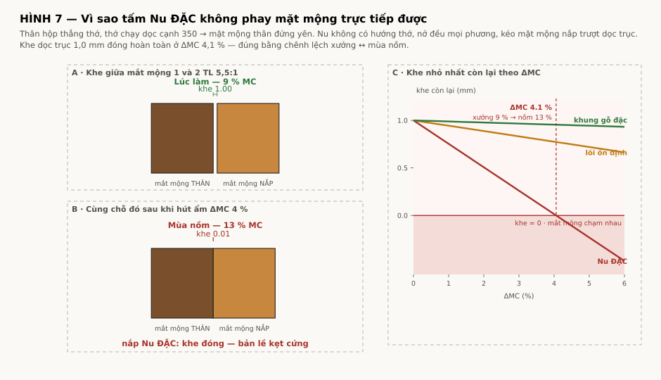
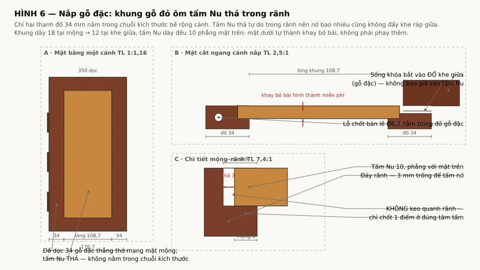

Thân hộp là gỗ đặc thẳng thớ, thớ chạy dọc cạnh 350 → mặt mộng bên thân gần như đứng yên (hệ số giãn dọc thớ ~0,01 %/1 % MC). Cánh nắp nở quanh tâm chuỗi mộng, kéo ba mắt mộng của nắp trượt dọc trục so với bốn mắt mộng của thân.

| Cấu tạo cánh nắp | Hệ số | ΔMC 2 % | ΔMC 3 % | ΔMC 4 % | ΔMC 5 % |
|---|---|---|---|---|---|
| Tấm Nu ĐẶC | 0,22 % | 0,51 | 0,26 | 0,01 | −0,23 |
| Khung gỗ đặc (dọc thớ) | 0,01 % | 0,98 | 0,97 | 0,96 | 0,94 |
| Lõi ổn định + veneer | 0,05 % | 0,89 | 0,83 | 0,78 | 0,72 |
Giá trị = khe dọc trục nhỏ nhất còn lại (mm). Âm nghĩa là mắt mộng chồng nhau.

| Chi tiết | Kích thước | Ghi chú |
|---|---|---|
| Đố dọc cạnh mộng | 34 × 350 × 18 | cocobolo đặc, thớ dọc 350; mang mặt mộng và lỗ Ø6,2 |
| Đố dọc cạnh khe giữa | 34 × 350 × 12 | mang rãnh âm 4 × 21,7 cho sống khóa |
| Đố ngang trước/sau | 30 × 108,7 | vát theo khung |
| Lòng khung | 108,7 × 290 | |
| Tấm Nu | 120,7 × 302 × 10 | mộng 6 vào rãnh sâu 9 → thả 3 mm mỗi phía |
| Khe ráp giữa nắp | 0,6 → 1,5 ±0,3 | sống khóa 44 phủ kín nên không lộ |
| Chuyển vị cần nuốt (mỗi phía) | ΔMC 2 % | ΔMC 3 % | ΔMC 5 % | Chỗ trống |
|---|---|---|---|---|
| Tấm Nu theo bề rộng | 0,27 | 0,40 | 0,66 | 3,0 |
| Tấm Nu theo chiều dài | 0,66 | 1,00 | 1,66 | 3,0 |
Khung dày 18 tại mộng → 12 tại khe giữa. Tấm Nu dày đều 10, phẳng với mặt trên. Vậy mặt dưới tấm Nu cao hơn mặt dưới khung: 8 mm tại cạnh mộng, 2 mm tại khe giữa. Lòng lõm 108,7 × 290 đó chính là khay bỏ bài thấy trong ảnh mẫu.
| Cấu tạo khay | Gỗ | + Quân | TỔNG |
|---|---|---|---|
| Khay cocobolo | 5,49 | 2,43 | 7,92 kg |
| Khay lõi ổn định | 4,72 | 2,43 | 7,15 kg |
Khung nắp là kết cấu 4 mộng mỗi cánh, 8 mộng cả bộ, vừa giữ tấm Nu vừa mang mặt mộng bản lề. Mà cocobolo là một trong những loại khó dán nhất: chất chiết xuất (quinone) thổi lên bề mặt vừa gia công trong vòng vài phút và chặn kết dính.
| Hạng mục | Yêu cầu bắt buộc |
|---|---|
| Keo | EPOXY, không dùng PVA. PVA trên cocobolo là kiểu hỏng đã biết. |
| Lau dầu | Acetone, lau ngay trước khi ép — trong vòng 15 phút kể từ khi phay xong má mộng. Lau xong không chạm tay vào mặt dán. |
| Chốt khóa | Chốt gỗ Ø5 xuyên mộng, khoan lệch 0,8 mm (draw-bore). Mục đích không phải chịu tải — mỗi mộng chỉ chịu ~20 N — mà để khung không bung nếu đường keo hỏng sau vài mùa. |
| Kiểm tra | Ép thử 1 mộng mẫu, để 7 ngày rồi phá huỷ. Đường phá phải đi qua thớ gỗ, không được đi dọc đường keo. |
Cần 2 tấm đã lạng 121 × 302 × 12 (để bào xuống 10), lạng liên tiếp để book-match hai cánh. Khối Nu thô tối thiểu ~161 × 342 × 40.
| Hạng mục | Yêu cầu |
|---|---|
| Ổn định hoá | ngâm nhựa chân không (vacuum stabilise) trước khi gia công tinh |
| Mắt / lõi vỏ | trám epoxy trong hoặc epoxy + bột chính gỗ, trám trước khi chà tinh |
| Chiều dày | 10 mm là điểm cân — mỏng hơn dễ nứt khi thao tác, dày hơn khó sấy đều |
| Dán tấm | chỉ chốt 1 điểm ở đúng tâm; tuyệt đối không dán quanh rãnh |
| Hoàn thiện | Nu hút không đều → bít lỗ (grain filler) rồi mới phủ |
Khung nắp bằng cocobolo còn đẩy lượng gỗ Dalbergia mỗi hộp lên cao, và điều đó quyết định số hộp gửi được mỗi lô hàng:
| Cấu tạo khay | Dalbergia / hộp | 3 hộp | Tối đa mỗi lô |
|---|---|---|---|
| Khay cocobolo | 4,84 kg | 14,51 | 2 hộp |
| Khay lõi ổn định | 3,21 kg | 9,62 | 3 hộp |
Theo ngưỡng miễn trừ 10 kg của annotation #15 — phải xác minh lại bản hiện hành.
| # | Thay đổi | Lý do |
|---|---|---|
| 1 | Cánh nắp: tấm liền → khung + tấm thả | Nu đặc kẹt bản lề ở ΔMC 4,1 % |
| 2 | Khe ráp giữa 0,6 → 1,5 ±0,3 | chuyển vị hai đố ở ΔMC 5 % là 1,02 mm |
| 3 | Bỏ nguyên công phay lòng lõm cánh nắp | cấu tạo khung–tấm tự sinh ra khay bỏ bài |
| 4 | Thêm nguyên công ổn định hoá tấm Nu | chống nứt, chống hút hoàn thiện không đều |
| 5 | BOM thêm: 2 tấm Nu, epoxy trám, grain filler | |
| 6 | Hồ sơ CITES: thêm Afzelia | trước chỉ có Dalbergia |
| 7 | Khung nắp cocobolo (không phải gõ đỏ) | đồng màu thân như ảnh mẫu; kéo theo quy trình dán epoxy + chốt draw-bore |
tools/lid_solid_calc.py;
hình vẽ bằng tools/draw_lid.py. Hệ số giãn nở dùng: dọc thớ 0,01 %/1 % MC ·
gõ đỏ ngang thớ 0,15 % · Nu mọi phương 0,22 % · lõi ổn định 0,05 %.